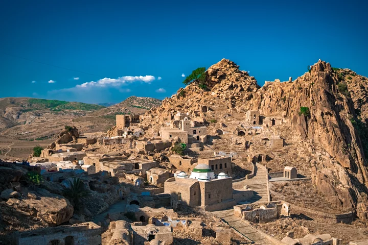
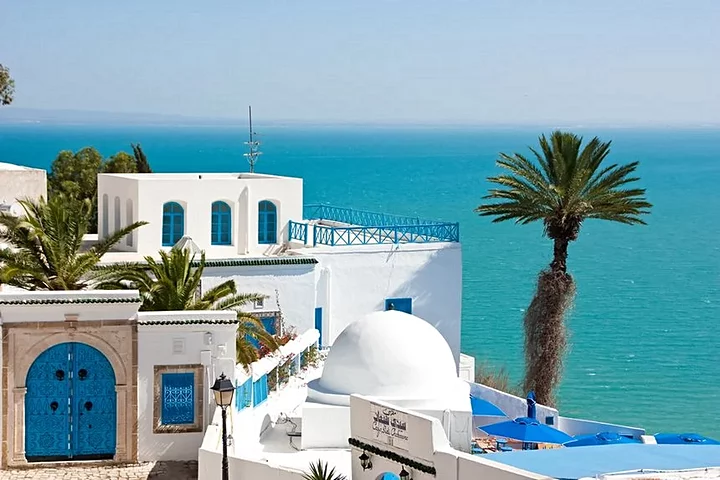
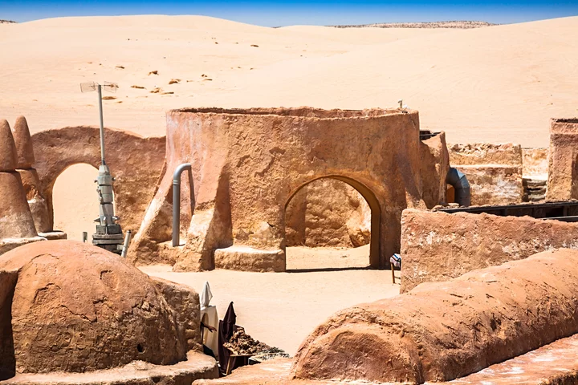
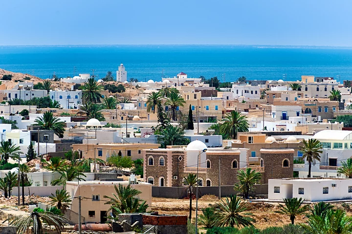
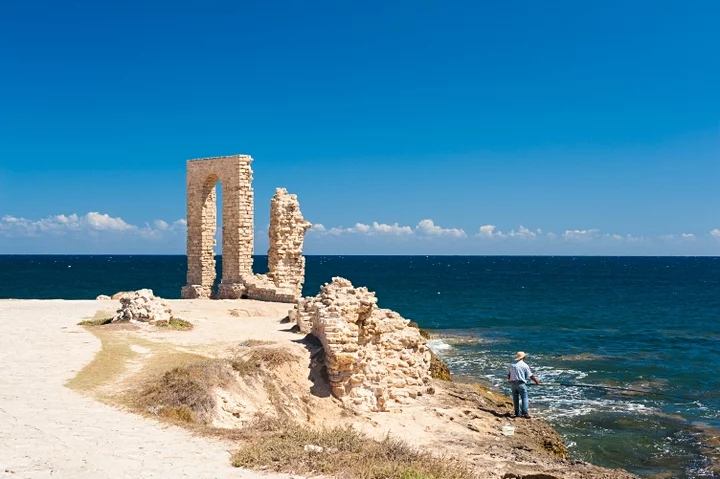

zaghouan
Zaghouan est une ville du nord de la Tunisie , située à 50Km de la capitale Tunis et à 35Km de la station balnéaire de Hammamet, la ville de Zaghouan est l’une des plus belles destinations de la Tunisie.

Sidi Bou Said
Juste à côté de la célèbre ville de Carthage et de ses thermes, le charmant village de Sidi Bou Saïd se distingue par son architecture et ses maisons colorées de bleu et de blanc. Promenez-vous dans les petites ruelles pavées de ce village et admirez les portes des maisons, qui sont, pour la plupart minutieusement décorées. Vous trouverez dans ce charmant village de nombreux hôtels et maisons d’hôtes, qui face à la mer offriront à leurs visiteurs des paysages d’une rare beauté. Côté culture, vous en profiterez pour visiter quelques musées avec notamment le musée Dar el-Annabi pour découvrir l’art de vivre en Tunisie et le palais Dar Nejma Ezzahra où sont exposés des instruments de musique et où se déroulent également des concerts et spectacles. Le vue y est exceptionnelle. Pour ramener quelques souvenirs, direction le marché traditionnel d’Art Lella Salha & Des métiers où vous trouverez des épices, des objets de l’artisanat traditionnel, des vêtements, des tapis…vous aurez l’embarras du choix.
Carthage
Classée au patrimoine mondial de l’Unesco, Carthage fut autrefois une cité commerciale très importante. Construit sur une colline dominant le golfe de Tunis, le site renferme des vestiges témoignant de plus de 2 000 ans d’histoire. Au fil de ces années, plusieurs civilisations se sont succédées marquant chacune d’elles de leur empreinte les différents monuments de la cité. Commencez votre visite sur la colline à Byrsa avec le musée où sont exposés des objets archéologiques provenant du site. Non loin, se trouvent les vestiges du quartier punique et du forum. Face à la mer, vous croiserez les thermes d’Antonin, un immense bâtiment où l’on aperçoit encore les salles voûtées des sous-sols. Autres temps forts, les deux ports puniques, le port militaire et le port commercial, le théâtre où se déroule chaque année le festival international de musique de Carthage.
Dougga
Dougga est un site archéologique, à une centaine de kilomètres de Tunis, en excellent état et probablement l’un des mieux conservés de tout le Maghreb. Classés au patrimoine mondial de l’UNESCO, ses vestiges sont situés sur une colline et s’étalent sur plus de 25 hectares. Il faut compter une demi-journée pour observer la plupart des édifices comme le théâtre, le capitole, les thermes, plusieurs temples et un mausolée… Une chose est sûre, si vous êtes dans la région nord durant vos vacances en Tunisie, une visite de Dougga est une étape à ne pas rater !

Douz
Au sud de la Tunisie, l’oasis de Douz est réputée pour être la « porte d’entrée du Sahara », le point de départ des excursions dans le désert. Entourée par les dunes de sable, la ville conserve ses traditions nomades et envoûte par son atmosphère chaleureuse et atypique. Profitez du cadre pour vous offrir une excursion en 4x4, à pied… ou en dromadaire !
El Jem
L’amphithéâtre El Jem se situe dans la petite ville du même nom dans la région du Sahel à environ 30 km de la ville de Mahdia. C’est le plus grand colisée d’Afrique du Nord et est classé au patrimoine mondial de l’UNESCO depuis 1979. Cette œuvre a été construite en 238 après J-C, un exploit architectural pour l’époque !

Ksar Ghilane
L’oasis de Ksar Ghilane est située entre la ville de Douz et Tataouine, à la limite du Grand Erg. Accessible facilement en voiture, c’est une étape incontournable pour se détendre après une journée passée dans le désert. Des bassins aux couleurs d’un vert transparent incitent à la baignade dans une eau chaude à plus de 30°C.
Matmata
Matmata se situe au sud-est du Chott el-Jérid, dans les contreforts du Djebel Dahar. Ce village berbère est célèbre pour ses habitations troglodytes mais également pour les fans de la saga « Star Wars » car il a servi de décor à la « Guerre des Etoiles ».

Nefta
Nefta se situe à un peu plus de 20 km de Tozeur, à la porte du grand erg oriental. Dans la région, c'est la grande ville la plus proche de la frontière algérienne (34 km d'Hazoua). Nefta était connue pour son oasis de la Corbeille qui a lentement décliné jusqu'à ce qu'un ambitieux programme international de réhabilitation, chapeauté par le club Unesco, lui rende sa superbe. Un pari aujourd'hui réussi.
Tozeur
Tozeur, la plus grande des oasis et la plus belle avec sa superbe palmeraie ! Prenez le temps de déambuler dans les petites ruelles de la Médina avec ses maisons de briques aux beaux motifs et aux portes cloutées typiques. Vous y observerez sûrement des femmes en train de tisser de beaux tapis. Située aux portes du désert, Tozeur sera un bon point de départ pour une balade à dos de dromadaire ou en 4x4.

Djerba
Grande île d'environ 20 kilomètres sur 20, Djerba se situe juste au large de la côte nord-est de l'Afrique, dans le sud-est de la Tunisie, près de la frontière libyenne. Située sur le golfe de Gabès, l'île est célèbre pour l'éclectisme de ses résidents et de ses touristes, ses magnifiques plages et ses villages pittoresques caractérisés par les typiques maisons carrées, blanchies à la chaux. Houmt Souq est l'unique grande ville, avec ses marchés pleins d'effervescence et ses terrasses de cafés animées. Djerba, dont on pense qu'elle a inspiré l'Odyssée d'Homère, possède un château de pirates et des mosquées aux allures de forteresses. Accessible depuis le sud de la Tunisie, une route à l'origine construite par les Romains relie l'île au continent.

Mahdia
Mahdia est une station balnéaire à taille humaine et ses plages comptent parmi les plus réputées de Tunisie. Que vous preniez des vacances en couple ou en famille, c’est assurément la destination idéale pour paresser sur le sable fin, se baigner dans une eau transparente, faire des soins de thalasso ou de la plongée sous-marine. Loin des hôtels-clubs, peut-être préférerez-vous les petites plages désertes, ou les plages rocheuses où les habitants de Mahdia aiment se baigner l’été. L’eau y est délicieusement fraîche et pure.

Oudna
Le site archéologique de Oudna est situé à une trentaine de kilomètres de Tunis. Ce site est un véritable bijou à ne pas manquer avec notamment son amphithéâtre et son capitole encore bien préservés. L’importance des ruines montre que cette ville devait autrefois jouer une place importante dans le pays. La visite commence par l’amphithéâtre, l’un des plus grands de Tunisie pouvant accueillir 15 000 personnes et encore en excellent état. Il possède de nombreuses salles voûtées qui sont accessibles depuis l’arène. Le Capitole quant à lui, se dresse fièrement sur la colline, il offre une vue imprenable sur tout le site d’Oudna. Récemment rénové, il donne l’impression à ses visiteurs que le temps s’est arrêté ! Le site comporte également les ruines des anciens thermes publics, de quelques villas, et du théâtre de la ville.
Takrouna
Takrouna, un petit village berbère situé dans la région du Sahel Tunien, plus exactement à Enfidha. Et pourtant, ce village vaut bien le détour. Situé à environ 6 Km à l’ouest d’Enfidha, en direction de Zaghouan, peu de personnes connaissent ce village berbère qui est pourtant l’un des plus anciens de la Tunisie. Construit sur un gros rocher fossilisé datant de plus de 2000 ans, Takrouna domine une plaine avec une vue à couper le souffle qui donne sur le gofle de Hammamet, Hergla, Sousse, Zaghouan ainsi que la plaine de Kairouan.